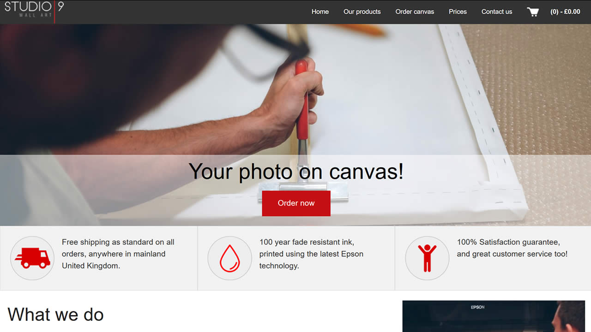

Hi, I'm Kevin!
I am currently studying a MEng in Computing at Swansea University and am in my fourth and final year. I graduate in June.
Some of my projects
World Explorer


Software which allows the user to explore surfaces of non spheroidal shapes in three-space.
- Compatible with the Oculus Rift DK2 and CV1
- Works with any geometry with a reasonably well behaved surface
- Written in C# using UnityEngine and LibOVR
- Developed a simple but effective hands free virtual reality user interface system
- Open source, and the code is available on Github!
Studio 9 Wall art

A completely custom e-commerce platform with a truly 30 second order process.
- I developed the front-end component, delivering a fast-loading, beautiful experience
- Developed using Grunt, NPM, HTML5, CSS3, Jquery, etc
- Processed thousands of pounds worth of transactions
- Worked with another freelance developer, who developed the back-end
- Dabbled with Golang to ship my own features
Warp FFMPEG frontend

A frontend for rendering FRAPS footage for consumption on Youtube.
- I developed the entire project in Visual Basic .NET
- Uses FFMPEG library for video rendering
- Makes it easy for Youtube gamers to produce multiple series
- Makes use of the highly efficient x264 video compression codec to deliver highly compressed, optimised video for upload to video hosts
- Open source, and the code is available on Github!
Notsoeducated.org

A custom website to help educate people new to E-cigarettes
- Developed using Foundation Framework
- Designed for maximum shareability, making use of OG data attributes as well as JS to dynamically generate pages
- Recieved thousands of visitors a day at one point
- Written in PHP and with a MYSQL database backend
- Open source, and the code is available on Github!